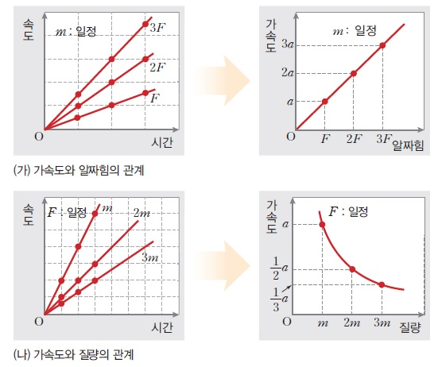
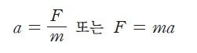

뉴턴의 제1법칙을 통해 우리는 알짜힘이 0이 되어 힘의 평형을 이룰 때 물체의 운동상태가 변하지 않는 다는 것을 배웠다. 그렇다면 알짜힘이 작용할 때 운동상태는 어떻게 변하까? 실험을 통해 물체에 작용하는 알짜힘과 가속도의 관계를 알아보자
쇼핑카트에 질량이 일정할떼 알짜힘을 1N,2N,3N으로 증가시키면 가속도는 a,2a,3a 로 증가한다. 반대로 알짜힘이 일정할 때 질량을 1kg,2kg,3kg으로 증가시키면 가속도는 a,a,1/2 a,1/3 a 로 감소한다. 이를 그래프로 나타내면 다음과 같다.
이를 통해 우리는 알짜힘이 작용할 때 물체가 가속하며 가속도의 방향은 알짜힘의 방향임을 알 수 있다. 그리고 이때 가속도의 크기는 힘의 비례하고 질량에 반비례하다. 따라서 a=F/m 이고 F=ma 이다. 이러한 법칙을 뉴턴의 제 2법칙 가속도 법칙이라고 부른다.
| 뉴턴의 제 2법칙 |  |